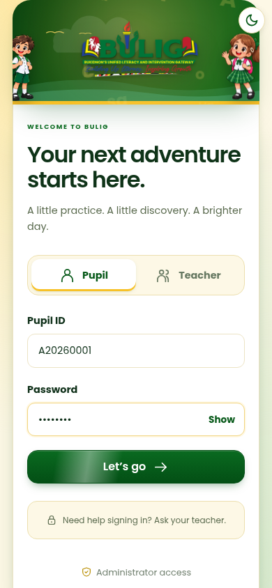
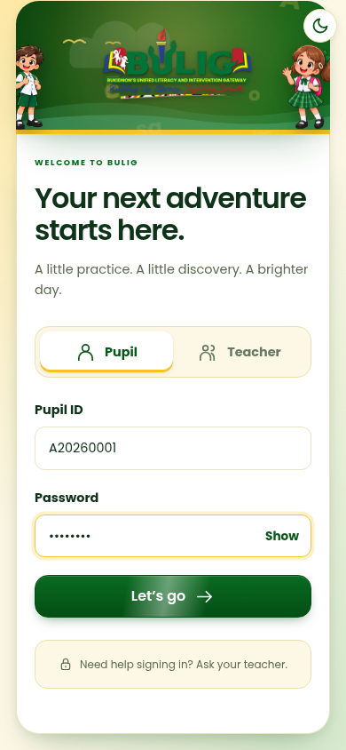
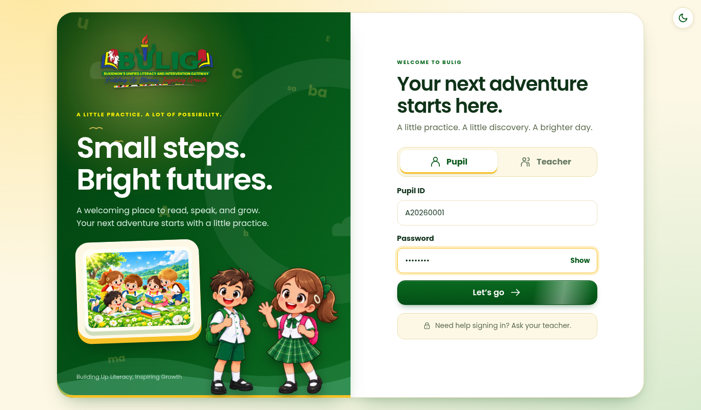

Everyone signs in with the same form. BULIG finds the account from the ID, so the right place opens even if the wrong tab is chosen.
NowA separate link for admins. An admin ID in the Pupil tab says “incorrect”.

After · phoneThe link is gone. The same form works for everyone.

After · PCCleaner card for the children. Admins type their ID like everyone else.

In any tab. Pupil, Teacher or administrator: it is the same form.
It checks the ID and password. A wrong password still says “incorrect”, and 8 tries still locks for 15 minutes.